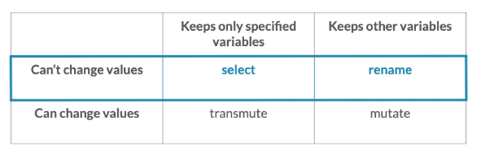

6 minutes
R Programming 101- Dplyr
Dplyr
Dplyr is a grammar of data manipulation, providing a consistent set of verbs that help you solve the most common data manipulation challenges.
Installation
install.packages(“dplyr”)
Command Usage
Pipe command similar to python and other languages in R is represented as:
%>%
See an example:
gapminder %>% filter(year == 1957) %>% group_by(continent)
The command above first applies filter operation to the dataset and on that output groups by continent.
General Commands
-
Filter
Select a subset of whole dataframe.
filter( column_name == value ) filter(item %in% c(list_of_items) ) filter(col_1
= val_1, col_1 ==val_2 and so on)This command will be written following the pipe sign in R. The second example is used to filter multiple possible OR conditions. The conditions matching AND can either be passed separated by commas or by & sign.
-
Filter NA columns
filter(is.na(col_name))
This is used to get those having NA column values.
-
-
Arrange
Sort rows of dataframe based on certain column value.
arrange(column_name) arrange(desc(column_name))
The sorting order is ascending by default. To sort based on descending order, desc keyword is used just before the column name to sort by as shown in the above example. This command will also be written following the pipe sign in R.
-
Mutate
Any addition or changing of columns from original dataframe is done by using mutate.
mutate(pop = pop / 10000) mutate(popNew = pop / 10000)
The mutate changes the existing column if existing column is passed to the left of assignment. Else it creates a new column based on that name. Here, the first command changes the pop column and second command creates a new column called popNew.
This command will also be written following the pipe sign in R.
-
Summarize
This is used to create summary of certain columns based on the groupings from the original dataframe. This returns just the summary of dataframe.
min() max() mean() median() sum()
The above mentioned are some general expressions used with summarize operation.
For actual use of summarize:
group_by(continent) %>% summarize(medianPop = median(pop))
If we group by continent first and then make a summary; We get output in the form:
Continent MedianPop Asia 300000000 Africa 200000000
-
Select
This is used to select a part of subtable when you don’t want information that is through all the columns of the given dataframe.
dataframe %>% select(column_1, column_2, …)
-
Advanced commands with select
-
Range of Columns
select(col_name_1:col_name_N)
This command selects columns from 1 to N. In general cases, we have similar information related columns together and this is helpful in selecting only those columns without specifying name for each one of them.
-
Contains
Here contains is used to select columns based on some strings that appear.
select(col1, contains(“string”))
-
Starts With
select(starts_with(“str”))
-
Ends With
select(ends_with=“str”)
-
Last column
Selects the last column of the dataframe.
select(last_col)
-
Rename columns
We can change the column name directly using select.
select(col_1, col_2 , new_col_3_name = col3_name)
-
Help for these commands
?select_helpers
-
-
Removing column by column names
select(-col_name1, -col_name2)
Here minus sign is used to remove a column from some result. In many cases when we are filtering information, we may not want that table in final output as same values have no significance.
-
-
Group By
Often times we want to group similar columns by some higher level of information to observe an analysis from a different perspective. e.g. We may have population of each district and often want to see the trend of zones as well. So, we might group districts by zone and observe them.
dataframe %>% group_by(column_name, second_col_name_if_needed, and so on)
Take care of ordering when using group by to group data by certain columns.
-
Count( sort=TRUE, wt=some_column)
The specific variables can be counted from the dataset using this verb. The additional parameter can be used to sort results based on count directly from this verb. The weight variable can be used for sorting based on some value.
-
Top N
Used together with group. For each group, returns specific number of results. Mostly used when plotting into graphs the extremes for each cases.
top_n(NUMBER, column_name) top_n(5, population)
-
Ungroup
After grouping, ungroup data to make more different kinds of summaries about data. You often will do some grouping and find certain values, then ungroup and perform over it like a new dataset to work with in the first place.
ungroup()
-
Rename
This is used to rename columns in case you want to change them.
dataframe %>% rename(new_name = original_name)
-
Transmute :ATTACH:
ID: 79a32bed-83e8-4a32-a627-68d353fc970dThis command not just selects but transforms the column when selecting as well.
Comparison of four different commands: 
-
Window functions
-
Lag function
mutate(difference, column - lag(column))
Here lag(column) gets a lagged column values useful for comparing consecutive rows in our dataset.
-
Join Commands
-
Inner Join
inner_join(table_name, by=c(“col_name_in_1st_table” = “col_name_in_2nd_table”, suffix=c(“new_name_for_col1”, “new_name_for_col2”, so on.))
We join tables using inner join conditions using such command. If both column names are same in both tables, we can just use by = “col_name” to make a join. NOTE Here notice that inside c used in by clause, there is a equals sign in between. I was confusing it to be comma all the time.
-
Left Join
When you want to get the elements of the first table fully along with the matching rows in two tables, you ought to use left_join.
left_join(similar_to_other_joins)
-
Right Join
When you want to get the elements of the second table fully along with the matching rows in two tables, you ought to use right_join.
right_join(similar_to_other_joins)
-
Full Join
Keeps the output of both tables after matching even if it doesn’t appear in the other table.
full_join(table_2, by=… , suffix = ….)
-
Semi Join
This gives the same columns that are in the first as well as second table.
semi_join(similar_to_other_joins)
-
Anti Join
This join gives the columns in another table that are not in the first table.
anti_join(similar_to_other_joins)
Advanced Commands
-
Replace NAs
replace_na(list(col_name = 0))
We often have NA values that we want to give meaning to. In this case, we set all NA values to 0 in that column.
-
Suffix Argument
any_join_type(table_name, by_condition, suffix=c(“replaceText”, “replaceTextforSecondMatch”))
To clarify the use of this variable, let’s assume there are two tables and both contain column called “name”. Then, what should R do when it joins two tables based on some index from the table. This is where suffix comes into play. You give two arguments to suffix as "_replaceText" then the first name will append “_replaceText” to the column name and similarly goes on for the next value as well.
-
n() in Summarize Columns
When you want to count the number of rows after grouping, you will use n() function to get the count of rows after grouping.
summarize(countValue = n(), others…)
-
Bind rows
This is to stack tables over one another.
table_1 %>% bind_rows(table_2)
Additional Functions
-
Glimpse()
Give a brief glimpse of the dataset. Shows all columns and their first 10 values or so in a row wise format. This gives an idea about the type of values you will see through the column and often ranges as well.
Backlinks
1168 Words
2020-09-22 00:00 +0545